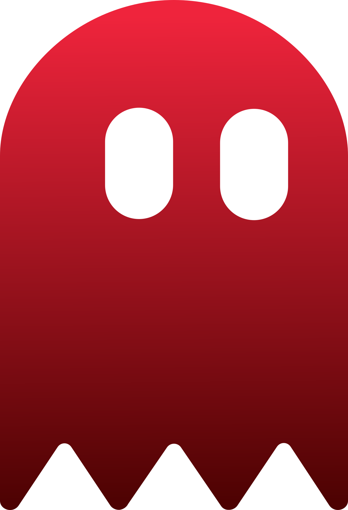

Ghostlog watches the projects you point it at: commits, failed shell commands, and moments you flag in a localhost tab, turning them into a running, searchable log of what happened and why. Free, open-source, local-first. No account, no cloud, no telemetry.
Windows/Linux planned · Always links to the latest release
Zero manual note-taking required for most of it.
| Trigger | How it fires |
|---|---|
| File changes | A filesystem watcher on each watched project (git repos only) picks up meaningful edits as you work. |
| Git commits | A post-commit hook calls Ghostlog's CLI mode, which reads the commit diff and drafts an entry. |
| Shell errors | An optional shell hook captures the command and exit code whenever a terminal command fails. |
| Browser events | A companion browser extension can flag a moment on a localhost tab — e.g. a console error — optionally attaching a screenshot. |
Home → Archive → Curate → Compile.
The tray-owned review window: watch status, one-click manual capture per project, and the most recent capture.
Every session, browsable by date and searchable across all entries by title, tag, or summary text.
Point Ghostlog at a local llama.cpp server. Nothing is sent anywhere until you set this; leave it blank to keep using mock summaries.
Frontend ↔ backend is Tauri IPC. App ↔ browser extension is Native Messaging over stdio, not reachable by any webpage.
Ghostlog doesn't know you exist. AI drafting is bring-your-own: point Settings at a local model server, or leave it unset.
Watched folders must be the root of a git repository, validated server-side, never trusted to the UI.
Compiled documents, screenshots, and session data all land where you choose, nothing scattered across the filesystem.